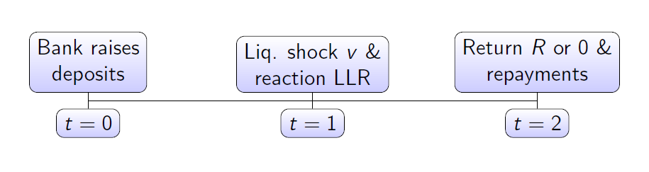
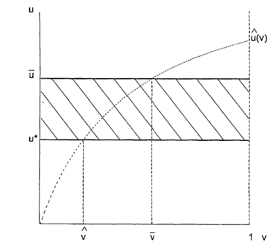

The Great Financial Crisis showed the ine ectiveness of the LLRs.
Who should be the LLR and bank supervisor?
Thornton (1802): The CB should be supervisor and LLR.
Bagehot (1873)
Only lend to solvent institutions
Lending at a penalty rate
Transparency about liquidity provision
But what about
Moral hazard
Constructive ambiguity
Information asymmetry
Systemic risk & bailouts
Deposit insurance
Interbank market
Set-up of the model
Repullo(2000)
Focuses on the optimal allocation of LLR responsibilities between a central bank and the DI.
Three period model: t = 0 a bank raises an amount of deposits and invest them in an illiquid asset that yields a return \(\tilde{R}\) at t = 2. Assets cannot be sold at t = 1, but possible to liquidate the bank with value L
At t = 1 a fraction of deposits,\(v \in (0,1)\) is withdrawn. No possibility to sell assets, therefore need to lend from LLR.

LLR Decision
Di or central bank has supervisory powers to gather information about assets of the bank.
This leads to a signal:\(u \in (0,1)\) at \(t=1\)
\begin{equation}\label{eq:repulloreturn}
\widetilde{R}=\begin{cases}
0, & \text{with probability 1-u}.\\
R, & \text{with probability u}.
\end{cases}
\end{equation}
Both agencies maximize their objective functions
Comparing three cases
Benchmark optimal policy
One step back, let \(u\) be verifiable, so no agency needed to observe \(u\).
Compare (expected) returns for society:
\begin{equation}\label{eq:a}\tag{3.2}
uR-(1-u)c \geq L-c
\end{equation}
If the left hand side is bigger, it is optimal for society to provide liquidity. That is, if:
\begin{equation}\label{optimalrepullo}\tag{3.3}
u\geq u^*= L/(R+c)
\end{equation}
Central Bank as LLR
Central bank cost function if it saves the bank, \(\beta\): bankruptcy cost central bank
\begin{equation}\tag{3.4}
(1-u)v+(1-u)\beta c
\end{equation}
Cost of not providing liquidity: \(\beta c\)
Central bank compares cost functions and provides liquidity if:
\begin{equation}\label{eq6}\tag{3.5}
u\geq \hat{u}(v)=\frac{v}{v+\beta c}
\end{equation}
\(\hat{u}(v)\) is minimum \(u\) that has to be observed to make the central bank better off by saving the bank.
Deposit insurer as LLR
Deposit insurer cost function if supporting the bank: \(\gamma\) is bankruptcy costs for DI.
\begin{equation}\tag{3.6}
(1-u)(v+(1-v))+(1-u)\gamma c
\end{equation}
Not providing liquidity:
\begin{equation}\tag{3.7}
(1-L)+\gamma C
\end{equation}
Again comparing both cases results in a minimum \(u\):
\begin{equation} \label{eq8}\tag{3.8}
u\geq \bar{u}= \frac{L}{1+\gamma c}
\end{equation}
Optimal allocation
\(v\) is verifiable for society, possible to calculate for each \(v\) the allocation of the LLR to one of the agencies that minimizes social cost. 
Conclusions
Conclusions
Making some assumptions: More likely to have values of \(u>u^*\) and small liquidity shocks happen more often.
Give central bank supervisory powers and transfer to the deposit insurance corporation during the big liquidity shocks.